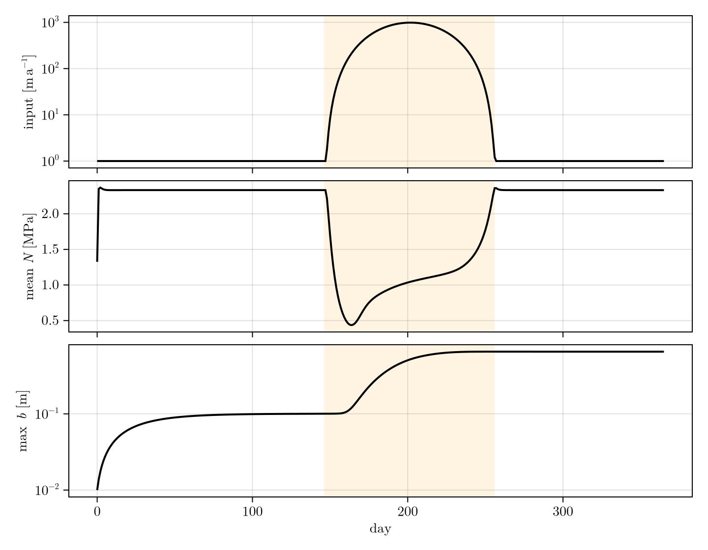
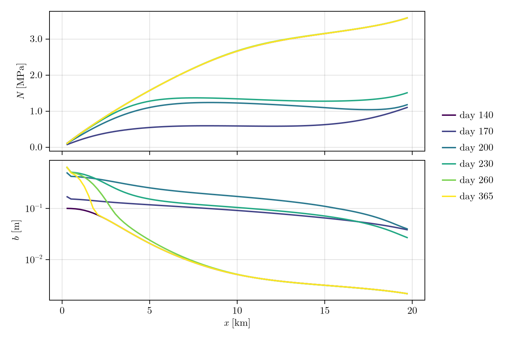

Seasonal melt
The seasonal experiment of (Sommers et al., 2018) (Sect. 3.3) on the ice-sheet margin of the Tutorial, with the default sheet. SeasonalMeltInput() holds the input at 1 m/a in winter and raises it along a cosine to almost 1000 m/a in the melt season, from day 146 to day 256.
This page runs when the docs are built to simulate one year of 1-day steps. The winter before the melt season is the spin-up.
using Shakti
using NetCDF
using CairoMakie
using Statistics: meanSetup
The same margin as the tutorial: flat bed, SHMIP surface (de Fleurian et al., 2018), outlet at x = 0.
nx, ny = 80, 20
grid = Grid(nx, ny, 20000.0, 5000.0)
mask = fill(GROUNDED, nx, ny)
mask[1, :] .= LAND
mask[end, :] .= OTHER_BASIN
mask[:, [1, end]] .= OTHER_BASIN
zb = zeros(nx, ny)
zs = [6 * (sqrt(x + 5000.0) - sqrt(5000.0)) + 1 for x in grid.x, y in grid.y]
b = fill(0.01, nx, ny)
p = ModelParameters()
sl = RegularizedCoulombSlidingLaw(0.25)
state = State(grid)
set_initial_conditions!(state, grid, p, sl, mask, fill(5e-25, nx, ny), zb, zs, b, fill(0.05, nx, ny),
fill(1e-6, nx + 1, ny), zeros(nx, ny + 1), fill(1.0 / (365 * 86400.0), nx, ny),
zeros(nx + 1, ny), zeros(nx, ny + 1));Run
SeasonalMeltInput(; t_start, t_end, amplitude, offset, i_min) sets the window (year fractions) and the cosine (m/a); the defaults are the paper's. The input is uniform in space and updated once per step.
mi = SeasonalMeltInput()
dt, nsteps = 86400.0, 365
path = joinpath(mktempdir(), "seasonal.nc")
max_iter, tol = 200, 1e-6 # Picard iterations per step and tolerance
ps = PicardSolver(max_iter, tol, LUDirectSolver(grid), grid)
sim = Simulation(grid, state, nsteps, floattype(dt), p, mi, sl;
ps = ps, observer = IOObserver(["N", "b", "Re", "ieb"], 0:nsteps, NetCDFFileWriter(), path))
run!(sim)
sim.hs.ps.converged;Through the year
The input, the mean effective pressure and the largest gap. The winter state is reached within about 100 days. In the melt season N drops by half within two weeks and recovers as the gap opens; it is back to its winter value as soon as the input is.
N, bb, Re, ieb = (ncread(path, v) for v in ("N", "b", "Re", "ieb"))
days = ncread(path, "time") ./ 86400
gr = mask .== GROUNDED
spy = 365 * 86400.0
series = [(L"\mathrm{input}\ [\mathrm{m\,a^{-1}}]", [mean(ieb[:, :, k][gr]) * spy for k in axes(ieb, 3)], log10),
(L"\mathrm{mean}\ N\ [\mathrm{MPa}]", [mean(N[:, :, k][gr]) / 1e6 for k in axes(N, 3)], identity),
(L"\max\ b\ [\mathrm{m}]", [maximum(bb[:, :, k][gr]) for k in axes(bb, 3)], log10)]
lin = vs -> [L"%$(round(v, digits = 1))" for v in vs]
pow10 = vs -> [L"10^{%$(round(Int, log10(v)))}" for v in vs]
decades(v) = 10.0 .^ (floor(Int, log10(minimum(v))):ceil(Int, log10(maximum(v))))
fig = Figure(size = (720, 560))
for (r, (name, v, scale)) in enumerate(series)
ax = Axis(fig[r, 1]; ylabel = name, yscale = scale, xlabel = r == 3 ? L"\mathrm{day}" : "",
xticklabelsvisible = r == 3, xtickformat = vs -> [L"%$(round(Int, d))" for d in vs],
yticks = scale === log10 ? decades(v) : Makie.automatic, ytickformat = scale === log10 ? pow10 : lin)
vspan!(ax, 146, 256; color = (:orange, 0.12))
lines!(ax, days, v; color = :black, linewidth = 2)
end
rowgap!(fig.layout, 8)
fig
Along the flow line
N and the gap along x before, during and after the melt season. Inland the gap is back to its winter profile within days of the season's end. Within 2 km of the outlet the ice is under 50 m thick and closes the gap very slowly, so the gap the season opened there stays.
show_days = [140, 170, 200, 230, 260, 365]
frames = [findfirst(>=(d), days) for d in show_days]
jm = ny ÷ 2
ix = findall(gr[:, jm])
xkm = grid.x[ix] ./ 1e3
colors = cgrad(:viridis, length(frames); categorical = true)
fig2 = Figure(size = (720, 480))
ax1 = Axis(fig2[1, 1]; ylabel = L"N\ [\mathrm{MPa}]", xticklabelsvisible = false, ytickformat = lin)
ax2 = Axis(fig2[2, 1]; ylabel = L"b\ [\mathrm{m}]", yscale = log10, xlabel = L"x\ [\mathrm{km}]",
xtickformat = vs -> [L"%$(round(Int, v))" for v in vs], ytickformat = pow10,
yticks = decades(vcat((bb[ix, jm, k] for k in frames)...)))
for (c, k) in enumerate(frames)
lab = L"\mathrm{day}\ %$(round(Int, days[k]))"
lines!(ax1, xkm, N[ix, jm, k] ./ 1e6; color = colors[c], linewidth = 2, label = lab)
lines!(ax2, xkm, bb[ix, jm, k]; color = colors[c], linewidth = 2, label = lab)
end
Legend(fig2[1:2, 2], ax1; framevisible = false)
rowgap!(fig2.layout, 8)
fig2